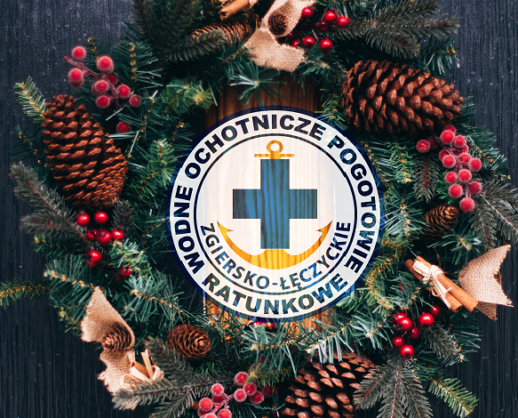
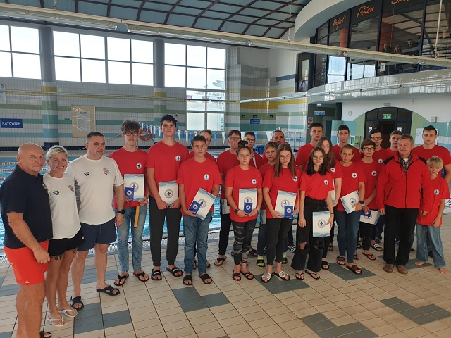

W sobote 18.05.24r. braliśmy udział w obchodach powiatowego dnia strażaka.
na naszym stoisku mozna było zobaczyc z jakim sprzetem pracuje WOPR oraz zapoznać się z podstawami pierwszej pomocy.
29.02.2024
Zapraszamy na szkolenie ratownicze
Szkolenie na Ratownika Wodnego...
Ruszamy z zapisami na szkolenie na Ratownika Wodnego
• Młodszy Ratownik WOPR
• Ratownik Wodny
Spotkanie organizacyjne oraz egzamin wstępny - 28.04.2024
* możliwość zorganizowania kursu KPP oraz dodatkowych uprawnień niezbędnych w ratownictwie
wodnym(patent sternika motorowodnego, certyfikat z nurkowania organizacji o zasięgu
międzynarodowym)
19.02.2024
Recertyfikacja Kwalifikowanej Pierwszej Pomocy!
Zgiersko-Łeczyckie WOPR serdecznie zaprasza...
Zgiersko-≈Åeczyckie WOPR serdecznie zaprasza wszystkich ratownik√≥w na Recertyfikację Kwalifikowanej Pierwszej Pomocy! üöë
üìÖ Data: 24 marca
üìç Lokalizacja: CSiR‚ÄùWodnik‚Äù w Ozorkowie
Więcej informacji dostępne są pod numerem telefonu: 794 303 333
12.06.2023
Zapraszamy na szkolenie ratownicze październik 2023
Spotkanie organizacyjne oraz egzamin wstępny - 01.10.2023
Ozorków ul.Lotnicza 1A (basen "Wodnik")
tel: 794 303 333 lub 792 868 089 .
* możliwość zorganizowania kursu KPP oraz dodatkowych uprawnień niezbędnych w ratownictwie wodnym(patent sternika motorowodnego, certyfikat z nurkowania organizacji o zasięgu międzynarodowym)
* możliwość zorganizowania kursu KPP oraz dodatkowych uprawnień niezbędnych w ratownictwie wodnym(patent sternika motorowodnego, certyfikat z nurkowania organizacji o zasięgu międzynarodowym)
02.01.2023
Godziny otwarcia siedziby Z-Ł WOPR
Siedziba Zgiersko- Łęczyckiego WOPR Otwarta w każdą......
Siedziba Zgiersko- Łęczyckiego WOPR Otwarta w każdą pierwszą środę miesiąca w godz. 10.00 do 14.00 oraz w każdy ostatni piątek miesiąca w godz. 10.00 do 14.00 W inne dni prosimy o kontakt telefoniczny.
02.01.2023
Mini sekcja Ratownictwa Sportowego
Zapraszamy do uczestnictwa w zajęciach z ratownictwa sportowego. ...
Zapraszamy do uczestnictwa w zajęciach z ratownictwa sportowego.
Wszystkie osoby chętne powinny charakteryzować się dobrą kondycją fizyczną oraz
umiejętnością pływania co najmniej dwoma stylami.
Minimalny wiek uczestnika – 8 lat.
Zajęcia startują 08.01.2023 (niedziela) i będą odbywały się w czwartki o godz. 20:00
oraz niedziele o godz. 08:00 na basenie „Wodnik” w Ozorkowie.
Więcej informacji oraz zapisy pod
nr tel. 794 303 333
27.12.2022
Aktualizacja kadr
szkoleniowych
W celu uaktualnienia danych kadry szkoleniowej Zgiersko -
Łęczyckiego WOPR ...
W celu uaktualnienia danych kadry szkoleniowej Zgiersko -
Łęczyckiego WOPR oraz zgłoszenia jej do MSWiA,
wszystkie osoby
zainteresowane prowadzeniem szkoleń proszę o dostarczenie wszelkich
wymaganych dokumentów, potwierdzających kwalifikacje opisane
poniżej, osobiście do siedziby naszego WOPR bądź przesłanie ich na adres
email podany poniżej w nieprzekraczalnym terminie do 15.01.2023r.
23.12.2022
Wesołych Świąt
Wesołych Świąt Bożego
Narodzenia...
Wesołych Świąt Bożego Narodzenia oraz Szcześliwego Nowego
Roku życzy Prezes oraz Zarząd Zgiersko-Łęczyckiego WOPR
17.11.2022
Regulamin i porządek obrad V
zjazdu Zgiersko-Łeczyckiego WOPR
Przedstawiamy do wglądu regulamin...
Przedstawiamy do wglądu Regulamin oraz porządek obrad obowiązujący podczas V zjazdu
Zgiersko-Łeczyckiego WOPR
03.11.2022
Zaproszenie na V zjazd Zgiersko-Łęczyckiego WOPR XX-lecie
Zarząd Zgiersko-Łęczyckiego WOPR serdecznie zaprasza do wzięcia udziału w uroczystej a także
organizacyjnej części V zjazdu Zgiersko-Łęczyckiego WOPR
Miejsce: Hala Sportowa w Ozorkowie ul.Traugutta 2.
Data: 26.11.2022
Więcej informacji na zdjęciu poniżej.
21.09.2022
Zapraszamy na szkolenie ratownicze październik 2022
* możliwość zorganizowania kursu KPP oraz dodatkowych uprawnień niezbędnych w ratownictwie
wodnym(patent sternika motorowodnego, certyfikat z nurkowania organizacji o zasięgu
międzynarodowym)
19.06.2022
Podsumowanie szkolenia czerwiec 2022
W dniu 19 czerwca zostało przeprowadzone podsumowanie...
W dniu 19 czerwca zostało przeprowadzone podsumowanie szkolenia Ratowników Wodnych,
Ratowników Młodszych oraz Ratowników WOPR szkolenie ukończyło 40 kandydatów:
oraz 16 osób chętnych otrzymało certyfikat SCUBA DISCOVERY z nurkowania organizacji o
zasięgu międzynarodowym SDI
Uroczystego zaprzysiężenia dokonali członkowie zarządu oraz Prezes Zgiersko-Łeczyckiego
WOPR.
Gratulujemy
15.04.2022
Wesołego Alleluja!!!
Z okazji Świąt Wielkanocnych wielu radosnych chwil...
Z okazji Świąt Wielkanocnych wielu radosnych chwil, serdecznych spotkań rodzinnych oraz
wszelkiej pomyślności.
Życzy Prezes z Zarządem Zgiersko-Łeczyckiego WOPR
09.04.2022
Kurs Kwalifikowanej Pierwszej
Pomocy
Zgiersko-Łęczyckie WOPR zaprasza na ...
Realizowany przez nas kurs kwalifikowanej pierwszej pomocy pozwala na uzyskanie tytułu
ratownika zgodnie z art. 13 ustawy z dnia 8 września 2006 roku o Państwowym Ratownictwie
Medycznym.
lokalizacja: CSiR "Wodnik" w Ozorkowie
Kurs odbywa się w trybie weekendowym:
I zjazd 03- 05 czerwiec
II zjazd 10-12 czerwiec
Zapisy:
zgierskoleczyckiewopr@gmail.com
Lub
Nr.tel 883 572 595
cena: 1000 zł
Dla członków Z-Ł WOPR
cena: 930 zł
Liczba miejsc ograniczona!
Organizator zastrzega sobie możliwość odwołania kursu w przypadku zbyt małej ilości
chętnych.
15.04.2022
Szkolenie na Ratownika Wodnego
Zapraszamy na szkolenie Ratownicze...
Zapraszamy na szkolenie Ratownicze
Możliwość uzyskania pełnych uprawnień wymaganych do podjęcia pracy w charakterze ratownika
już przed sezonem letnim.
01.01.2022
Składka Członkowska
Po ponad dekadzie Zarząd Główny WOPR podniósł....
Po ponad dekadzie Zarząd Główny WOPR podniósł wysokości rocznych składek od każdego członka
WOPR. Składka od 2022 roku będzie wynosiła 70 zł.
Pełne informacje w załączonej Uchwale Zarządu Głównego WOPR nr 13/XI/2021 z dnia 20 grudnia
2021 roku ws składki w WOPR
Składki można wpłacać w Biurze lub na konto swojej jednostki WOPR. Potwierdzeniem opłaceni
składki na dany rok jest wpis w legitymacji członka WOPR oraz hologram na 2022 rok naklejony
na plastikowy identyfikator (żółty).

24.12.2021
Wesołych Świąt
Niech magiczna moc wigilijnego wieczoru przyniesie Wam spokój
...
Niech magiczna moc wigilijnego wieczoru przyniesie Wam spokój i radość. Niech każda chwila
świąt Bożego Narodzenia żyje własnym pięknem, a Nowy Rok obdaruje Was pomyślnością i
szczęściem.
Najpiękniejszych świąt Bożego Narodzenia
Życzy Prezes z Zarządem Zgiersko-Łeczyckiego WOPR
06.11.2021
Kurs Sędziego Pływania
Zapraszamy na kurs SĘDZIEGO PŁYWANIA organizowany przez...
Zapraszamy na kurs SĘDZIEGO PŁYWANIA organizowany przez Zespół Sędziów Łódzkich
Zgłoszenia i zapisy
Magdalena Sodomirska 660-269-660
*Termin jest zależny od ilości zgłoszeń Grudzień 2021/ Styczeń 2022

04.11.2021
Podsumowanie Szkolenia
W dniu 24 października zostało przeprowadzone podsumowanie szkolenia Ratowników
Wodnych
...
W dniu 24 października zostało przeprowadzone podsumowanie szkolenia Ratowników Wodnych,
Ratowników Młodszych oraz Ratowników WOPR szkolenie ukończyło 21 kandydatów:
Zgiersko-Łęczyckie Wodne Ochotnicze Pogotowie Ratunkowe dziękuje Dyrekcji oraz
Personelowi CSiR
Wodnik w Ozorkowie za umożliwienie oraz profesjonalne zabezpieczenie szkolenia PADI
Discover
Scuba Diving w dniu 17.10.2021 dla naszych Instruktorów oraz Ratowników Młodszych i
Ratowników
Wodnych. Szkolenie to pozwoliło podnieść kwalifikacje oraz uzyskać dodatkowe
uprawnienia
przydatne w ratownictwie wodnym zgodnie z Rozp. MSWiA z dnia 23 września 2021 r.
02.09.2021
Kurs
Kwalifikowanej
Pierwszej Pomocy
Zgiersko-Łęczyckie WOPR
zaprasza na kurs
Kwalifikowanej Pierwszej
Pomocy. ...
Zgiersko-Łęczyckie Wodne Ochotnicze Pogotowie Ratunkowe zaprasza na kurs
Kwalifikowanej
Pierwszej Pomocy.
Realizowany przez nas kurs kwalifikowanej pierwszej pomocy pozwala na
uzyskanie tytułu ratownika
zgodnie z art. 13 ustawy z dnia 8 września 2006 roku o Państwowym
Ratownictwie Medycznym.
lokalizacja: CSiR "Wodnik" w Ozorkowie
termin: kurs odbywa się w trybie weekendowym,
I zjazd 24-26 wrzesień
II zjazd 1-3 październik


{kind=link}
{kind=link}
{kind=link}